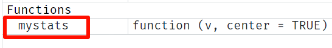

# i会从1开始一直取到5
for(i in 1:5) {
print("你好")
}
## [1] "你好"
## [1] "你好"
## [1] "你好"
## [1] "你好"
## [1] "你好"10 控制结构和自编函数
在正常情况下，R中的代码是从上到下按顺序执行的，但是有些时候我们可能想要重复执行某些操作，或者只在满足某些条件时执行某个操作，而在不满足条件时执行另一种操作。这时候就需要不同的控制结构。
本章会介绍两种控制结构，一种是循环结构，另一种是分支结构。
10.1 循环结构
在处理实际问题时，我们经常会遇到以下问题，比如：重复执行某个操作，这时候就要用到一些常见的控制语句，比如：for循环、while循环等。
10.1.1 for循环
重复执行某个操作，直到变量的值不再包含在序列seq中为止。基本语法：
for (var in seq) { statment }举个简单的例子，对于1-5中的每个数字，都打印你好：
在实际使用时，最好先准备一个容器，用来存放for循环的输出，这样可以加快运行速度。
假如我们有一个数据框如下：
set.seed(123)
df <- data.frame(a = rnorm(10),
b = rnorm(10),
c = rnorm(10),
d = rnorm(10)
)
df
## a b c d
## 1 -0.56047565 1.2240818 -1.0678237 0.42646422
## 2 -0.23017749 0.3598138 -0.2179749 -0.29507148
## 3 1.55870831 0.4007715 -1.0260044 0.89512566
## 4 0.07050839 0.1106827 -0.7288912 0.87813349
## 5 0.12928774 -0.5558411 -0.6250393 0.82158108
## 6 1.71506499 1.7869131 -1.6866933 0.68864025
## 7 0.46091621 0.4978505 0.8377870 0.55391765
## 8 -1.26506123 -1.9666172 0.1533731 -0.06191171
## 9 -0.68685285 0.7013559 -1.1381369 -0.30596266
## 10 -0.44566197 -0.4727914 1.2538149 -0.38047100现在我们要计算每列的中位数，我们可以使用for循环实现：
- 准备容器：结果是4个中位数，所以是
double类型，数量是4个，所以容器是一个double型的向量，长度为4； - for循环本体
output <- vector("double", ncol(df)) # 准备容器
for(i in 1:ncol(df)){ # 此时的i表示1，2，3，4
output[i] <- median(df[,i])
}
output
## [1] -0.07983455 0.38029264 -0.67696525 0.49019094以上也是最常见的for循环的结构，主要包括3个部分：
- 输出：
output <- vector("double", ncol(df))。在开始循环之前就要给输出分配足够的空间，这样做可以提高运行速度； - 迭代器：
i in 1:ncol(df)。 - 循环体：
output[i] <- median(df[,i])。这部分是具体运行的操作，每次运行都会使用一个不同的i值，第1次是output[1] <- median(df[,1])，第2次是output[2] <- median(df[,2])，以此类推。
注意
用seq_along(xx)代替1:length(xx)是更好的选择，这样可以避免向量长度为0时报错。所以上面的代码也可以写成for(i in seq_along(df)){statment}
除了直接使用数字序号（索引）作为迭代器，也可以使用列名作为迭代器：
output <- vector("double", ncol(df)) # 准备容器
names(output) <- colnames(df) # 给容器也准备好名字
for(i in colnames(df)){ # 此时的i表示列名
output[i] <- median(df[,i])
}
output
## a b c d
## -0.07983455 0.38029264 -0.67696525 0.49019094可以单独把循环体拿出来运行一下看看：
output["a"] <- median(df[,"a"])10.1.2 while循环
while循环也是重复执行某个操作，直到条件不再满足为止，适用于不知道循环几次的情况。
while (cond) { statment }while循环比for循环简单，for循环总是可以改写成while循环，但是while循环不一定能改写成for循环：
for( i in seq_along(x)){
statment
}
# 等价于
i = 1
while(i <= length(x)){
statment
i = i +1
}while循环不如for循环常见，大家感兴趣可以自己学习。
10.2 分支结构
如果符合条件（必须返回逻辑值，即TRUE或者FALSE），就执行某个操作。是大家中学数学中都学过的if-else结构。if-else经常和for循环连用。
10.2.1 if-else
1个分支的情况比较少见，但是也有，基本语法如下：
if(条件) {
操作
}举个简单例子，如果x>5，就打印“大于5”：
x <- 5
if(x > 5){print("大于5")}
# 可以简写成
if(x > 5) print("大于5")两个分支是最常见的操作，如果符合条件，就执行某个操作，如果不符合，就执行另一个操作。基本语法为：
if(条件){
操作1
} else {
操作2
}这种结构由于比较常见，也可以简写为：
# 这种写法使用很频繁
ifelse(条件, 操作1, 操作2)使用第5章开头用的TCGA的乳腺癌数据为例。
TCGA每个样本的barcode是有明确含义的，它的第14位和第15位数字如果小于10，说明这个样本是tumor，否则就是normal。
我们可以根据此特点，创建一个新的变量用来表示样本类型（tumor还是normal）。
# 读取数据
df <- read.csv("datasets/brca_clin.csv", header = T)
# 展示下第一个样本的barcode
df$barcode[1]
## [1] "TCGA-BH-A1FC-11A-32R-A13Q-07"
# 新建一个变量，用来表示样本类型
group <- ifelse(as.numeric(substr(df$barcode,14,15))<10,"tumor", "normal")
group
## [1] "normal" "normal" "normal" "normal" "normal" "normal" "normal" "normal"
## [9] "normal" "normal" "tumor" "tumor" "tumor" "tumor" "tumor" "tumor"
## [17] "tumor" "tumor" "tumor" "tumor"如果一个表达式函数太多，你看不懂，那你就从最里面一层开始看。比如上面的最后1行代码，我们从最里面的一层开始看：
df$barcode：取df的barcode这一列substr(df$barcode,14,15)：截取barcode的第14位和第15位as.numeric(substr(df$barcode,14,15)：把第14位和第15位转换为数值型，以便和10比较as.numeric(substr(df$barcode,14,15))<10：判断是不是小于10，返回TRUE或者FALSEifelse(xxx, "tumor", "normal")：根据条件执行操作
多个分支也是常见操作，基本语法如下：
if(条件1) {
操作1
} else if(条件2) {
操作2
} else if(条件n) {
操作n
} else {
操作x
}中间可以有任意多个条件和操作。
10.3 自编函数
有时可能并没有合适的、可直接使用的R包能满足我们个性化的需求，这时候就需要自己写函数实现。
在使用代码实现自己的需求前，首先你自己得搞清楚解决这个问题的逻辑，也就是你脑海中要知道，为了解决这个问题，第一步需要做什么？第二步需要做什么？第三步需要做什么？要明确定义解决这个问题的逻辑，然后再通过代码实现你的这几个步骤。
一个函数的结构如下所示：
myfunction <- function(参数1, 参数2, ... ){
操作
return(返回值)
}假如你想编写一个函数，用来计算一个数值型向量的集中趋势（均值和标准差）或者离散趋势（中位数和绝对中位差），默认是计算均值和标准差，但是也可以通过修改参数，让函数计算中位数和绝对中位差。
为了写出这个函数，我们首先确定，这个函数需要哪些参数？它的最终返回结果是什么？
对于这个问题来说，第一个参数就是一个数值型向量；除此之外，还需要第2个参数，用来控制到底是计算集中趋势还是计算离散趋势。
函数的输出结果就是两个值，要么是均值和标准差，要么是中位数和绝对中位差。
然后是确定具体的执行步骤，对于这个问题也就是计算均值和标准差（或者中位数和绝对中位差），如何实现呢？这个问题当然是通过if-else了，如果满足条件就计算集中趋势，不满足就计算离散趋势。
确定好具体的步骤之后，我们就可以开始写这个函数了。
mystats <- function(v, center=TRUE){ # 2个参数，第2个参数默认值是TRUE
if(center == TRUE){ # 满足条件则...
均值 <- mean(v)
标准差 <- sd(v)
res <- c(均值,标准差)
} else { # 不满足条件则...
中位数 <- median(v)
绝对中位差 <- mad(v)
res <- c(中位数, 绝对中位差)
}
return(res) # 不写这句也可以
}写好之后，要使用这个函数，你可以直接全选这个函数，然后Run一下，就可以在Environment面板中看到这个函数了：

然后就可以使用了。
随机创建一个数值型向量用于演示：
set.seed(1234)
x <- rnorm(500)用编写的函数计算：
# center=TRUE 可以不写，不写就是默认TRUE，计算集中趋势
y <- mystats(v = x)
y
## [1] 0.001838821 1.034813946
# 或者计算离散趋势
y <- mystats(v = x, center = F)
y
## [1] -0.02070734 1.00098385除了选中运行外，还可以把这个函数保存为一个R脚本文件，要使用前先source一下即可。
我们把上面的函数保存为mystats.R，然后source一（注意路径问题）下：
source("mystats.R") # 注意路径看看Environment面板中是不是出现了这个函数？
10.4 实战1
再来一个实战。for循环和if-else连用。
我们根据年龄将TCGA中的样本分为老年、中年、青年，如果年龄小于40岁，就是“青年”，如果大于等于40且小于60，就是“中年”，否则就是“老年”。
先在脑海中想一下，怎么用计算机语言实现这一过程。
因为有条件（如果xxx就xxx，如果不xxx就zzz），所以肯定要用到if-else；然后对于每一个年龄，都要判断是不是满足条件，所以要用到for循环。
先定义一个容器，然后准备序列，然后根据条件判断。
# 定义一个容器
age_groups <- vector("character", length(df$age_at_index))
for (i in 1:length(df$age_at_index)) { # 序列
if(df$age_at_index[i] < 40) { # 判断条件
age_groups[i] <- "青年"
} else if (df$age_at_index[i] >= 40 & df$age_at_index[i] <= 60) {
age_groups[i] <- "中年"
} else if (df$age_at_index[i] > 60) {
age_groups[i] <- "老年"
}
}
age_groups
## [1] "老年" "老年" "老年" "老年" "中年" "中年" "中年" "青年" "中年" "中年"
## [11] "中年" "中年" "老年" "中年" "老年" "老年" "老年" "中年" "中年" "青年"是不是还算简单，并没有想象中的难。
这个函数还有很多可以改进的地方，当你学习深入后可以尝试一下。
10.5 实战2
批量把多个数据框保存到不同的csv文件中，或者批量读取多个文件。这里是以csv文件为例进行演示，其他类型的文件同理。
假设有以下6个数据框：
df1 <- data.frame(
patientID = c("甲","乙","丙","丁"),
age = c(23,43,45,34),
gender = c("男","女","女","男")
)
df2 <- data.frame(
patientID = c("甲","乙","戊","几","庚","丁"),
hb = c(110,124,138,142,108,120),
wbc = c(3.7,4.6,6.4,4.2,5.6,5.2)
)
df3 <- data.frame(
patientID = c("丙","乙","几","庚","丁"),
rbc = c(4.5,4.3,4.5,3.4,4.2),
plt = c(180,250,360,120,220))
df4 <- data.frame(
patientID = c("丙","乙","几","庚","丁","甲","戊"),
a = rnorm(7, 20),
b = rnorm(7,10)
)
df5 <- data.frame(
patientID = c("丙","乙","甲","戊"),
d = rnorm(4, 2),
e = rnorm(4,1)
)
df6 <- data.frame(
patientID = c("乙","几","庚","丁"),
f = rnorm(4, 2),
g = rnorm(4,1)
)10.5.1 批量保存多个文件
把这6个数据框单独保存为6个csv文件。
首先把这6个数据框放到一起，一般选择放到一个列表中，然后使用for循环批量保存：
# 放到1个列表中
dataframes <- list(df1,df2,df3,df4,df5,df6)
for(i in 1:length(dataframes)){ # 对于列表中的每一个，都执行一个操作
write.csv(dataframes[[i]], # 使用数字序号选择列表中的对象
file = paste0("datasets/csvs/","df",i,".csv"),
quote = F,row.names = F)
}打开电脑看看是不是已经保存好了6个csv文件？
不懂的话先看看最里面的输出内容：
# 此时的i表示1，2，3，4，5，6
paste0("datasets/csvs/","df",1,".csv")
## [1] "datasets/csvs/df1.csv"如果这个列表中的对象都有名字的话：
dataframes <- list(df1,df2,df3,df4,df5,df6) # 放到1个列表中
names(dataframes) <- c("df1","df2","df3","df4","df5","df6") # 添加名字
names(dataframes) # 查看名字
## [1] "df1" "df2" "df3" "df4" "df5" "df6"
for(i in names(dataframes)){
write.csv(dataframes[[i]], # 使用对象名字选择对象
file = paste0("datasets/csvs/",i,".csv"),
quote = F,row.names = F)
}不懂的话还是可以先看一下最里面的输出内容：
# 第1个i就是"df1"
paste0("datasets/csvs/","df1",".csv")
## [1] "datasets/csvs/df1.csv"对于for循环来说，比较常见的迭代器就是数字序号（索引）或者名字，二者在使用中基本相同，注意序列中具体指代的东西，使用数字序号的方法更加常见。
10.5.2 批量读取多个文件
多个表格的批量读取。
首先查看（获取）要读取的文件名：
allfiles <- list.files("datasets/csvs")
allfiles
## [1] "df1.csv" "df2.csv" "df3.csv" "df4.csv" "df5.csv" "df6.csv"批量读取：
# 先设置容器
dfs <- vector("list", length(allfiles))
for(i in 1:length(allfiles)){
dfs[[i]] <- read.csv(file = paste0("datasets/csvs/","df",i,".csv"))
}查看第1个：
dfs[[1]]
## patientID age gender
## 1 甲 23 男
## 2 乙 43 女
## 3 丙 45 女
## 4 丁 34 男如果你不会用paste0，没关系，可以直接使用路径名+文件名：
allfiles <- list.files("datasets/csvs",full.names = T)
allfiles
## [1] "datasets/csvs/df1.csv" "datasets/csvs/df2.csv" "datasets/csvs/df3.csv"
## [4] "datasets/csvs/df4.csv" "datasets/csvs/df5.csv" "datasets/csvs/df6.csv"# 先设置容器
dfs <- vector("list", length(allfiles))
for(i in 1:length(allfiles)){
dfs[[i]] <- read.csv(file = allfiles[[i]])
}
dfs[[1]]
## patientID age gender
## 1 甲 23 男
## 2 乙 43 女
## 3 丙 45 女
## 4 丁 34 男